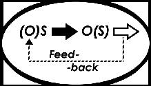
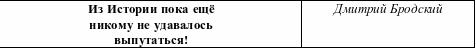

|
|
|
|

|
|
|
|
|
|
|
||||||||
|
||||||||||||||||||
|
 |
 Независимо от нашего знания или незнания, те действия, которые мы производим в отношении другого субъекта(S) как объекта(O), прямо или косвенно обязательно отразятся на нас, наших близких или наших будущих поколениях… Таков универсальный «закон обратных связей» |
ЛИСТОВКА правозащитно - просветительской группы «Обратная связь»
Москва. 22 февраля 2007 года
«Весь путь от гор Чечни и Ингушетии до степей Казахстана был отмечен кровавыми знаками, цепью из трупов, выбрасываемых конвоем из вагонов прямо на снег».
Сапият Масаева. Судьба чеченца. Москва: Самиздат, 1997. С.18
|
Отстали гор отроги, пошёл Урал, Арал… Родившийся в дороге - в дороге умирал. Скрипел вагон в заплатках. В пути умерших всех на остановках кратких закапывали в снег. И звали самых ловких на этот скорбный труд - состав на остановках ждал несколько минут. А если кто обряда свершить не успевал, на снег широкий падал, сражённый наповал. |
- За что? В ответ команда: - Живым не оставляй! - За что? - В ответ команда: - Стреляй его, стреляй! Усопшие в дороге лежали вне земли. Их берегли не боги, их волки стерегли. И пастью всей глодали тех, кто лежал, отстав. И волки снова ждали очередной состав и выли… Бег лет бесповоротен - в Арысь ушли они, тюльпаны вдоль полотен, как вечные огни. Иван Ментяк |
* * *
«В душных, наглухо задраенных вагонах везли на смерть тысячи и тысячи вайнахов.
А в это время сорок тысяч лучших сыновей этого несчастного народа мужественно сражались с фашистами в рядах Красной Армии. Они шли в бой, восклицая «:За Родину! За Сталина!» Они даже не подозревали, что тот же Сталин, с именем которого они шли в бой, отнял у них Родину, уничтожил половину их народа, а оставшихся в живых стариков, женщин, детей, покалеченных на войне мужчин, отправил в вагонах для скота на верную смерть. Какой же дьявольской бесчеловечностью обладали Сталин, Берия, Кабулов и их приспешники! Какое же это было кощунство - объявить «врагами народа» тысячи людей, глубоко порядочных, горячо любящих свою Отчизну».
Сапият Масаева. Судьба чеченца. Москва: Самиздат, 1997. С.19
Москва. Февраль 2007 г. Бродский Дмитрий
Почему нам так важно об этом помнить?
Сегодняшний день - трагическая дата в истории чеченцев и ингушей. 23 февраля 1944 года русские солдаты вошли в их села как каратели. Почему так важно помнить об этом нам, живущим в России сегодня? Да потому, что и сегодня мы живем в стране, жизнь в которой обустраиваем не мы сами, а группа людей, возомнившая себя ГОСУДАРСТВОМ, присвоившая себе сомнительное право указывать нам, как правильно жить. Какие у нас должны быть друзья, враги, как надо любить Родину и за кого голосовать. И еще - они хотят, чтобы мы их боялись. Ведь теми, кто боится власти, легче управлять. Легко посылать их детей в преступную армию, - они не задают лишних вопросов, легко добиться ненависти к могущественным и не очень друзьям, сделав их в одночасье заклятыми врагами, запросто можно заставить немножко боящихся захотеть чего-угодно! Усмирение Чечни - и в 1944, и в 2004 - это опасный самообман, это путь в никуда, потому что этот путь усеян погубленными жизнями сотен тысяч людей - чеченцев, русских и других народов. Это не может не обернуться трагедией в будущем, потому что насилие - особенно государственное насилие, став безнаказанным и повседневным, обессмысливает само настоящее, убивает свободу личности, ее безопасность, ее мечты и надежды на достойную жизнь. Невозможно насилием заставить любить и уважать.
Когда сила исчерпывается, наступает час истины. И этот час наступает. Потому что цивилизованный мир осознает - да, не так быстро, как хотелось бы многим из нас - но осознает, что мы все - в одной лодке, и управление этой лодкой зависит не от власть предержащих, а от граждан, сидящих в этой лодке, тех, кто выбирает эту власть. Если мы, живущие в России, хотим выжить и остаться в этой всемирной ладье, мы должны осознать себя свободными, то есть ответственными за свою собственную жизнь. А поэтому начать думать самостоятельно и не отдавать свою жизнь в руки политических авантюристов.
И главное на этом пути к свободе - оставить за другими народами это право - право любить нас или не любить, хотеть с нами жить или не хотеть. Вот почему нам, русским, так важно помнить о событиях 23 февраля 1944 года - мы еще не стали свободной нацией, и не станем, пока будем грубой силой подавлять стремление других народов к свободе.
Москва. Февраль 2007 г. Батенкова Елена
Листовки группы «Обратная связь» и другие материалы Комитета антивоенных действий Вы можете получать по четвергам во время пикета «Против войны в Чечне, военных преступлений и терроризма» с 17.30 до 19.00 на площадке перед Новопушкинским сквером ( м. Пушкинская на противоположной стороне от памятника А.С.Пушкину.). Более полная информация о причинах, потерях, жертвах и следствиях войны находится на сайте www.voinenet.ruи сайте группы «Обратная связь» www.feedbackgroup.narod.ru На нашем сайте вы можете также познакомиться с научными (философскими, психологическими, социологическими, политологическими), публицистическими и художественными работами, касающимися межнациональных и межклассовых отношений.
Издательская группа: «МНОБ-лист». Тираж на 22 февраля 2007 г.-100 экз. E-mail: miplibrary@mtu-net.ru
Рабу любому нужен раб,
Чтоб можно было отыграться
за то, что сам душою слаб
и сильным должен покоряться.
Но тот, кто честен, горд и смел
не станет унижать другого -
Иль видно нам другой удел
- терзать всех снова…!?
В.В. Смирнов (2003)
Желаем Вам мира в сердце и мирного неба над головой!